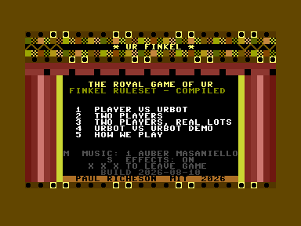
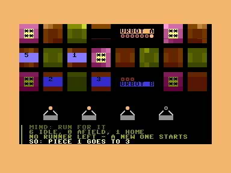
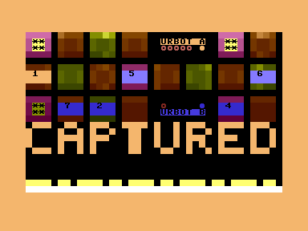
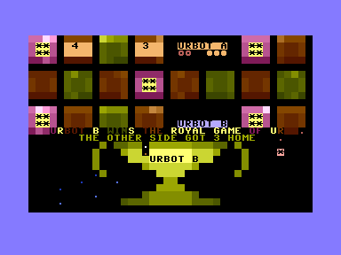

UR FINKEL
The Royal Game of Ur — a ~4,600-year-old board game — written in C and 6502 assembly for the Commodore Plus/4.
Downloads — four ways to take it away. Each card goes to the file it names; clicking a binary there saves it, while the checksum files open in the browser so you can save one beside the download and check it arrived whole.
-
urfinkel.prg
the program alone, for the Commodore Plus/4 — 56 511 bytes — built 2026-08-10
Drag it onto VICE, YAPE or plus4emu. It starts faster than the disk image — there is no directory to read first.
https://github.com/vonglurt/urfinkel/raw/main/build/urfinkel.prg
- SHA-256
075545a1cf34f7e6c615c3670e1d28158b51a78d3a090e41d5261c72a9f546b0— urfinkel.prg.sha256- MD5
991db4f541b3ecd1e92ef86aae59ced0— urfinkel.prg.md5
-
urfinkel.d64
a disk image, for the Commodore Plus/4 — 174 848 bytes — built 2026-08-10
Put it on an SD2IEC or a Pi1541, mount it as a disk, then
dload"urfinkel". Desktop emulators open it directly. https://github.com/vonglurt/urfinkel/raw/main/build/urfinkel.d64- SHA-256
513048d68076f25403553b874c4dd4a1fc9502636b00a14253e08d93310030cd— urfinkel.d64.sha256- MD5
35694f66c5dfd2578be5f81e1335c75f— urfinkel.d64.md5
-
urfinkel.zip
plays offline on a PC
full source included
the whole collection, zipped — 4 934 604 bytes — built 2026-08-10
Unpack it anywhere. Holds the program, the disk image, the whole C and 6502 source tree, this page with a script that serves it on your own machine, the licence, and notes — including the exact
cl65command that rebuilds the binary byte-for-byte from the source beside it. The emulator comes too, so the browser copy plays with nothing plugged in. https://github.com/vonglurt/urfinkel/raw/main/build/urfinkel.zip Fully offline: the game, the emulator and the page all come out of the folder — nothing is fetched from anywhere. It has to be served rather than opened directly, because afile://page may not read the files beside it: run./start-html.sh. The emulator inemulatorjs/is EmulatorJS, GPL-3.0 and not part of UR FINKEL — seeemulatorjs/SOURCE.txt.index.htmlbeside it is the same page taking the emulator from its CDN instead, which is always the current version.- SHA-256
bedd56500bbe00f9334c5230c4b318cbd848541ffebc35d52e66d5bcb42242ea— urfinkel.zip.sha256- MD5
11e8143b4eea6aed04ad478ffc95a844— urfinkel.zip.md5
-
urfinkel.tar.gz
plays offline on a PC
full source included
the same collection as a gzipped tar, for Linux and macOS — 4 914 726 bytes — built 2026-08-10
Unpack it anywhere. Holds the program, the disk image, the whole C and 6502 source tree, this page with a script that serves it on your own machine, the licence, and notes — including the exact
cl65command that rebuilds the binary byte-for-byte from the source beside it. The emulator comes too, so the browser copy plays with nothing plugged in. https://github.com/vonglurt/urfinkel/raw/main/build/urfinkel.tar.gz Fully offline: the game, the emulator and the page all come out of the folder — nothing is fetched from anywhere. It has to be served rather than opened directly, because afile://page may not read the files beside it: run./start-html.sh. The emulator inemulatorjs/is EmulatorJS, GPL-3.0 and not part of UR FINKEL — seeemulatorjs/SOURCE.txt.index.htmlbeside it is the same page taking the emulator from its CDN instead, which is always the current version.- SHA-256
2a0fc8ede2073d26d0cddcce0fce7c6cf33de22b939ec71d5ca0789e18396f3e— urfinkel.tar.gz.sha256- MD5
d53f75fb0f2bd0b1e78a658b9405c146— urfinkel.tar.gz.md5
To check a download arrived intact, save
its .sha256 beside it and run shasum -a 256 -c
urfinkel.prg.sha256. What built these — compiler, version and the
exact command — is in CHECKSUMS.txt.
Code — the whole repository
The four files above are built from, and committed to, github.com/vonglurt/urfinkel — along with the Makefile, the tests, the hooks and the reports that none of the archives carry. This is the same panel GitHub's green Code button opens, kept here so you do not have to go and find it.
https://github.com/vonglurt/urfinkel.git
git@github.com:vonglurt/urfinkel.git
Clone with either, then make && make disk.
Or take a snapshot of main as an archive — these are GitHub's
own, made from the branch on request, and are not the same files
as the collections above: they are the whole repository, and they carry no
checksums of their own.
VIDEO
A demonstration of the game running on a Commodore Plus/4 — also on YouTube.
CONTROLS
| Key | Where | What |
|---|---|---|
1–5 | menu | choose a mode |
1–7 | any turn | choose which piece to move |
m | menu and prompts | cycle the music |
space | after a win, rules screen | continue |
x x x | any match | leave, and return to the cabinet |
Left alone for two minutes, the cabinet starts the URBOT demo by itself and plays against itself.
WHAT THIS IS
The Royal Game of Ur, refereed by a Commodore Plus/4.
The game is about 4,600 years old. Its boards came out of the Royal Cemetery at Ur in the 1920s with no instructions attached, and the rules played here are the ones Irving Finkel reconstructed from a Babylonian cuneiform tablet — which is where this program gets its name.
It is a race. Seven pieces a side travel a fixed path and the first player to bring all seven home wins. Four tetrahedral lots are thrown for a count of 0 to 4, so the distribution is not flat — 2 is common, 0 and 4 are one in sixteen each — and a nil throw loses the turn. A piece enters on the square equal to the throw. Squares 5 to 12 are shared, and landing on a foe there sends it back to the start. The three rosettes are safe and grant another throw. Bearing off is exact: a piece on 14 needs a 1, not a 1-or-more.
The machine is the referee, and it holds the whole ruleset — entry, blocking, compulsory moves, capture, the safe rosettes, the exact bear-off. It casts the lots for you too; the only thing it ever asks a human is which piece to move, and it lists every legal one with where it would land. If you would rather throw real lots across a real table, there is a mode for that: you type the tip count and the program referees.
The opponent, URBOT, draws one of four doctrines at the start of a match — one at a time, fill the board, run for it, hunt and hold — re-draws once three of its pieces are home, and narrates every branch it takes into the chronicle at the foot of the screen, so you can read why it did what it did. Left alone for two minutes, the cabinet stops waiting and starts a match against itself.
It was written for a Plus/4 that had just been restored, after an afternoon of ancient-world tabletop gaming at a Viking festival — which is a long way of saying it exists because someone wanted to keep playing the game after going home.
HOW IT GOT HERE
The port is not the point, but it is why the game looks the way it does. This began as UR ROYAL, the same rules and the same screen written entirely in Commodore BASIC 3.5. That edition took 24 seconds to draw the board and 2.8 seconds to work out which moves are legal. Rewritten in C and 6502 assembly, the same work takes milliseconds — and the recovered time went straight back into the game: motion tweening, a real dice tumble, and music playing from a raster interrupt while the match runs. All three were ruled out before.
| Primitive | BASIC 3.5 | Compiled | Speedup |
|---|---|---|---|
| draw the board | 23 960 ms | 123.4 ms | 194× |
| paint one 4×4 square | 594 ms | 2.05 ms | 290× |
| refresh both token rows | 1 826 ms | 7.48 ms | 244× |
| find the legal moves | 2 785 ms | 4.83 ms | 577× |
Measured on the machine, both editions against the same PAL jiffy clock. It has also been run on real restored hardware, loaded from an SD2IEC.
SCREENS




THE PROJECT
Everything below points at the main branch on GitHub.
- Repository — the whole project
- README — what it is, the numbers, and what it cost
- INSTALL — build it on a Mac, or run it in a browser
- CONTRIBUTING — forking is encouraged; commits must be signed
- src/ — the C and 6502 assembly
- docs/ — the migration report, the architecture, the keyboard, the music
LICENCE
MIT License Copyright (c) 2026 Paul Richeson Permission is hereby granted, free of charge, to any person obtaining a copy of this software and associated documentation files (the "Software"), to deal in the Software without restriction, including without limitation the rights to use, copy, modify, merge, publish, distribute, sublicense, and/or sell copies of the Software, and to permit persons to whom the Software is furnished to do so, subject to the following conditions: The above copyright notice and this permission notice shall be included in all copies or substantial portions of the Software. THE SOFTWARE IS PROVIDED "AS IS", WITHOUT WARRANTY OF ANY KIND, EXPRESS OR IMPLIED, INCLUDING BUT NOT LIMITED TO THE WARRANTIES OF MERCHANTABILITY, FITNESS FOR A PARTICULAR PURPOSE AND NONINFRINGEMENT. IN NO EVENT SHALL THE AUTHORS OR COPYRIGHT HOLDERS BE LIABLE FOR ANY CLAIM, DAMAGES OR OTHER LIABILITY, WHETHER IN AN ACTION OF CONTRACT, TORT OR OTHERWISE, ARISING FROM, OUT OF OR IN CONNECTION WITH THE SOFTWARE OR THE USE OR OTHER DEALINGS IN THE SOFTWARE.
The emulator on this page is EmulatorJS, which carries its own licence and is loaded from its CDN. It is not part of this project.